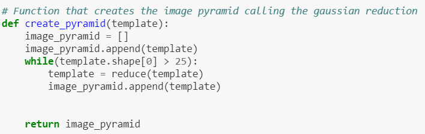

Where's Waldo?
So far, we've mostly focused on using imagery to do stuff for which it is better suited than a human: calculating camera locations from imagery, finding an optimal projective transform to stitch images together, and (soon) we'll be doing "structure from motion" in which we create 3D models of the world from collections of 2D images.
These are tasks primarily based around measuring things and doing calculations. On the other side of the coin is object recognition (identifying the semantic content of a scene), and the best contemporary computer vision algorithms do object recognition at roughly the level of a 2 year old human (with some exceptions).
For this (mini-)project, we're going to delve into a topic that sort of straddles the line between these two general realms of computer vision.
As a motivating example, did you ever play the game Where's Waldo. There are books filled with images like the following:

The objective, of course, is to find Waldo, the man in the red striped shirt and beanie wearing glasses. He looks like this:

These scenes are (obviously) intended to have a bunch of visual clutter to make this task reasonably challenging.
Your task will be to come up with an algorithm that locates the template image (Waldo's face) and the target image (the larger scene). This is called template matching, and it's a primitive form of feature recognition.
Implementation
Template Matching
Description of Template Matching here..
Image Pyramid: |   |